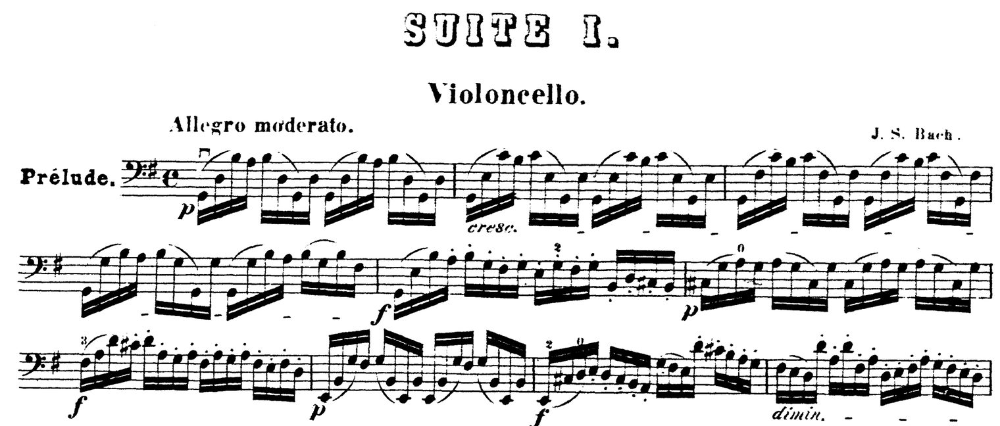

INCD STUDIO › Servizi › Trascrizioni e partiture
Trascrizioni, arrangiamenti e stampa di partiture
Ogni musica può trovare una nuova forma, un nuovo organico e nuovi interpreti. Realizziamo trascrizioni e arrangiamenti per strumenti e formazioni di ogni tipo, dalla musica solistica agli ensemble da camera, fino all'orchestra.
Partiamo dalle partiture originali o da materiali musicali esistenti e li adattiamo alle esigenze degli interpreti, rispettando il linguaggio e le caratteristiche della composizione. Ci occupiamo anche della preparazione grafica e della stampa delle partiture e delle parti staccate, con impaginazione professionale, leggibile e pronta per lo studio e l'esecuzione.
Un lavoro realizzato da musicisti, con competenza musicale e attenzione concreta alle esigenze di chi suona.
Trascrizioni per qualsiasi strumento
Trascriviamo opere e composizioni per adattarle a strumenti diversi da quelli previsti nella versione originale, mantenendo il più possibile fedeltà al testo musicale e coerenza con lo stile compositivo.
Ogni trascrizione viene curata tenendo conto delle caratteristiche tecniche ed espressive dello strumento destinatario: estensione, registro, tonalità, chiave, articolazione e possibilità esecutive.
Per gli strumenti traspositori gestiamo correttamente il trasporto delle parti; quando necessario, integriamo le indicazioni con arcate, diteggiature, respiri e altri suggerimenti utili all'esecuzione.
Lavoriamo sulle principali famiglie strumentali:
- Archi: violino, viola, violoncello e contrabbasso.
- Legni e ottoni: flauto, oboe, clarinetto, fagotto, sassofono, corno, tromba, trombone e tuba.
- Tastiere e corde pizzicate: pianoforte, organo, chitarra e arpa.
- Voce: canto solista, voci e formazioni corali.
Un esempio: dal PDF originale alla partitura digitale

J. S. Bach, Suite n. 1 BWV 1007, Preludio, battute 1–2. In alto, il PDF di una stampa dell'Ottocento (edizione Peters curata da Friedrich Grützmacher, pubblico dominio): si legge, ma i segni sono impastati e le righe non sempre dritte. Al centro, le stesse battute riscritte in digitale, con tutte le indicazioni della stampa: andamento, arcata, legature e dinamiche. In basso, due trascrizioni. Per viola: la viola ha le stesse corde del violoncello un'ottava sopra (Do, Sol, Re, La), così il violista ritrova gli stessi passaggi di corda dell'originale. Per fagotto: le note restano all'altezza originale, in chiave di basso; spariscono le arcate, pensate per l'archetto, e le legature sono riscritte a gruppi di quattro, per il fiato.
Arrangiamenti per ogni formazione
Realizziamo arrangiamenti originali e adattamenti di repertorio per organici di diversa composizione e dimensione: dal duo alle formazioni cameristiche, dai gruppi misti alle orchestre.
L'arrangiamento non è una semplice distribuzione delle note tra gli strumenti: richiede una conoscenza approfondita delle loro caratteristiche, degli equilibri timbrici e delle possibilità espressive di ciascun interprete.
Possiamo partire da una composizione originale, da una partitura orchestrale, da un brano esistente o anche da una semplice traccia musicale, sviluppando una nuova versione coerente con gli obiettivi artistici e le caratteristiche della formazione.
Partiture e parti staccate: preparazione e stampa
Prepariamo materiali musicali destinati allo studio, alle prove e alle esecuzioni professionali.
Ci occupiamo di impaginazione, revisione grafica, organizzazione delle pagine e preparazione delle parti staccate, curando leggibilità, spaziature, sistemi, voltate e disposizione delle indicazioni musicali.
Consegniamo partiture complete e parti individuali in formato digitale o stampato, pronte per essere utilizzate sul leggio.
Un servizio pensato per chi fa musica
L'esperienza diretta di musicisti e interpreti ci permette di affrontare ogni lavoro non soltanto dal punto di vista grafico e informatico, ma soprattutto da quello musicale ed esecutivo.
Che tu sia un compositore, un direttore, un insegnante, uno studente o un musicista professionista, possiamo aiutarti a trasformare una partitura esistente o un'idea musicale in materiale concreto, accurato e pronto per essere suonato.
Come funziona, passo dopo passo
- Ci invii il materiale: partitura originale in PDF, fotografia o manoscritto, indicando lo strumento o la formazione per cui desideri la trascrizione o l'arrangiamento.
- Valutiamo il lavoro: analizziamo il materiale, definiamo modalità e tempi di realizzazione e ti inviamo un preventivo dettagliato.
- Prepariamo una prima versione: realizziamo una bozza del lavoro e, se necessario, condividiamo un'anteprima in PDF non utilizzabile per l'esecuzione, destinata alla verifica del risultato.
- Rivediamo il lavoro insieme: raccogliamo le tue osservazioni e concordiamo eventuali correzioni e modifiche prima della finalizzazione.
- Consegniamo il materiale definitivo: completato il lavoro e ricevuto il saldo, consegniamo la partitura completa e le eventuali parti staccate in formato PDF, pronte per la stampa e l'utilizzo. Su richiesta, possiamo fornire anche le copie stampate.
Modalità di pagamento: per avviare il lavoro è previsto un acconto del 50% sull'importo concordato. Il saldo viene effettuato prima della consegna dei file definitivi.
Dalla partitura al disco
Una partitura può diventare anche una produzione musicale. Una volta completata la trascrizione o l'arrangiamento, possiamo occuparci della sua realizzazione sonora: dalla registrazione in studio alle riprese dal vivo e in sala da concerto, fino al mix, al mastering, alla stampa del CD e alla pubblicazione sulle piattaforme digitali.
Scopri i nostri servizi di registrazione in studio e produzione discografica.
Prezzi indicativi
- Trascrizioni: a partire da € 50 + IVA e contributo previdenziale INPS del 4% per pagina e per strumento.
- Arrangiamenti: a partire da € 150 + IVA e contributo previdenziale INPS del 4%. Il costo varia in funzione dell'organico, della durata, della complessità e del genere musicale.
I prezzi indicati sono tariffe di partenza. Ogni progetto viene valutato singolarmente, considerando il materiale di partenza, il lavoro richiesto e le eventuali scadenze. Prima di iniziare, riceverai sempre un preventivo personalizzato.
Domande frequenti
Per quali strumenti realizzate trascrizioni?
Lavoriamo con tutte le principali famiglie strumentali: archi, legni, ottoni, pianoforte, organo, chitarra, arpa, percussioni e voce, sia solista sia corale. Ci occupiamo anche della trasposizione delle parti per strumenti traspositori, come clarinetto, sassofono, corno e tromba, rispettandone tonalità, estensione e caratteristiche esecutive.
Posso inviarvi un manoscritto o una fotografia della partitura?
Certamente. Accettiamo partiture in PDF, scansioni, fotografie leggibili e manoscritti. Prima di iniziare valutiamo la qualità e la completezza del materiale e, qualora la fonte presenti difficoltà di lettura, ti segnaliamo eventuali problemi.
In quale formato riceverò il lavoro?
Consegniamo partiture complete e parti staccate in formato PDF, impaginate e pronte per la stampa. Su richiesta possiamo fornire anche i file MusicXML, per consentire ulteriori modifiche attraverso i principali software di notazione musicale, oltre alle copie cartacee stampate e rilegate.
È possibile trascrivere o arrangiare qualsiasi brano?
Per le opere di pubblico dominio non ci sono particolari limitazioni legate al diritto d'autore. Per le composizioni ancora protette, invece, la realizzazione e l'utilizzo di trascrizioni o arrangiamenti possono richiedere autorizzazioni da parte degli aventi diritto, secondo la natura dell'intervento e l'utilizzo previsto. Possiamo aiutarti a individuare gli adempimenti necessari prima di avviare il lavoro.
Quanto tempo occorre per realizzare una trascrizione o un arrangiamento?
I tempi dipendono dalla lunghezza della composizione, dalla complessità musicale e dal numero di strumenti coinvolti. Una trascrizione per strumento solo richiede generalmente meno tempo rispetto a un arrangiamento per ensemble o orchestra. Nel preventivo indichiamo sempre una tempistica di consegna concordata.
Come si comincia?
Scrivici a info@incd.it, chiamaci o contattaci su WhatsApp al +39 320 436 4489. Inviaci la partitura o il materiale musicale di partenza e indicaci per quale strumento o formazione desideri il lavoro. Valuteremo la richiesta e ti proporremo un preventivo personalizzato.